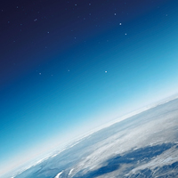

Атмосферний тиск в житті людини

Атмосфера Землі
Атмосфера, яка оточує земну кулю, здійснює тиск на поверхню Землі і на всі предмети, які знаходяться над Землею. Атмосферний тиск не такий маленький. На кожний квадратний сантиметр поверхні тіла діє сила близько 1 кг. Причина атмосферного тиску очевидна. Як і вода, повітря має вагу, а отже, чинить тиск, який дорівнює (як і для води) вазі стовпа повітря, що міститься над тілом. Чим вище ми підніматимемося вгору, тим менше повітря буде над нами, а отже, тим меншим стане й атмосферний тиск. Атмосферний тиск вперше виміряв італійський вчений Еванджеліста Торрічеллі в 1643 році. Для вимірювання тиску він використав прилад, який являє собою U подібну трубку довжиною близько 1м, запаяну з одного кінця і наповнену ртуттю. Оскільки у верхній частині трубки повітря немає, то тиск ртуті в трубці створюється тільки вагою стовпчика ртуті в трубці. Таким чином, атмосферний тиск дорівнює тиску стовпчика ртуті в трубці, і висота цього стовпчика залежить від атмосферного тиску оточуючого повітря: чим більший атмосферний тиск, тим вищий стовпчик ртуті в трубці і, таким чином, висота цього стовпчика може бути використана для вимірювання атмосферного тиску. Простір над стовпом ртуті в трубці в досліді Торрічеллі називають «торрічеллієвою пустотою».
Нормальним атмосферним тиском (на рівні моря) прийняте значення 760мм ртутного стовпчика (мм.рт.ст.) при температурі 0° С. Якщо тиск атмосфери, наприклад, 780мм.рт.ст., то це означає, що повітря здійснює такий же тиск, який здійснює вертикальний стовпчик ртуті висотою 780мм.

Зміна атмосферного тиску з висотою
Експериментально встановлено, що біля поверхні Землі з невеликими змінами висоти (декілька сотень метрів) тиск змінюється на 1мм.рт.ст. на кожні 12м висоти. Піднімаючись на гори, людина потрапляє в область зниженого тиску повітря; на значній висоті зниження тиску призводить до цілого ряду хворобливих явищ, які називають гірською хворобою.
Найважливішою обставиною є нестача кисню; при кожному вдиху в легені потрапляє певний об’єм повітря; чим більш розріджене повітря, тим менша маса його, а,отже, тим менша його маса складової частини – кисню – потрапляє в легені при кожному вдиху. При помірній висоті піднімання це почасти компенсується прискоренням дихання; при подальшому підніманні потрібно застосовувати кисневі прилади, які дають змогу дихати запасеним чистим киснем.
Особливо велике значення має застосування кисневих приладів у висотній авіації. На великих висотах, яких досягають тепер стратостати і літаки, штучне живлення організму чистим киснем вже не досягає мети. На таких висотах людина може існувати лише в герметично закритій кабіні, в яку нагнітають до достатнього тиску зовнішнє розріджене повітря.
Як людина переносить різну висоту над рівнем моря?
-
Смертельна зона - більше 8 км: людина може перебувати на цій висоті без дихального апарата лише короткий час - 3 хвилини, а на висоті 16 км - 9 секунд, після чого наступає смерть.
-
Критична зона - від 6 до 8 км: серйозні функціональні розлади життєдіяльності організму.
-
Зона неповної компенсації – від 4 до 5 км: погіршення загального самопочуття.
-
Зона повної компенсації - від 2 до 4 км: деякі порушення в діяльності серця, органів почуттів і ін. систем завдяки мобілізації резервних сил організму швидко зникають.
-
Безпечна зона - від 1,5 до 2 км: не спостерігається істотних збоїв у роботі організму людини.
На висотах, яких досягають штучними супутниками Землі, атмосфери практично немає. Тому постачати повітря у закриті кабіни супутників можна лише з узятого з собою запасу стисненого повітря або кисню.
Атмосферний тиск і погода
Погодні умови залежать від ряду факторів, одним з яких є атмосферний тиск. Коливання тиску від погоди мають дуже нерегулярний характер. Зміна тиску відіграє велику роль у змінах погоди. Середній або нормальний тиск на рівні моря дорівнює 101300 Па. Коливання тиску порівняно невеликі. Тиск рідко опускається нижче 93500-94000 і піднімається до 105500-106000 Па.
Найнижчий тиск на суші відмічено під час урагану 2 вересня 1935 року у Флориді-Кіс у США, - 892,3 гПа,або 669,3 мм.рт.ст. На морі найнижчий тиск відмічений у тайфуні в Тихому океані, на заході від острова Гуам, 24 вересня 1958 року - 877 гПа, або менше 658 мм. Найвищий тиск на земній поверхні зафіксовано на півночі Західного Сибіру, на метеорологічній станції Агата 31 грудня 1968 року – 1083,2 гПа , або 812,4 мм.рт.ст.